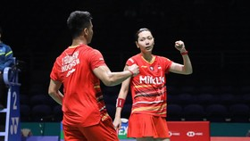

Hasil All England 2024: Dejan/Gloria Singkirkan Unggulan China
CNN IndonesiaSelasa, 12 Mar 2024 22:45 WIB
Jakarta, CNN Indonesia -- Ganda campuran Indonesia Dejan Ferdinansyah/Gloria Emanuelle Widjaja menyingkirkan unggulan kelima asal China, Jiang Zhen Bang/Wei Ya Xin pada babak pertama All England 2024 di Utilita Arena, Birmingham, Selasa (12/3) malam WIB.
Dejan/Gloria berhasil meraih kemenangan meyakinkan 21-10, 21-16 atas Jiang Wei dalam waktu 38 menit.
Dejan/Gloria melakoni duel alot melawan Jiang/Wei di gim pertama. Dejan/Gloria sempat unggul 5-2 tetapi skor bisa disamakan jadi 5-5.
Dejan/Gloria bermain apik setelah interval. Pasangan Indonesia ini hanya membuat Jiang/Wei terus dalam tekanan hingga akhirnya menang dengan skor meyakinkan 21-10 di gim pertama.
Situasi berubah memasuki awal gim kedua. Kali ini justru Jiang/Wei yang bisa unggul tipis 4-3 atas Dejan/Gloria.
Tiga poin beruntun bahkan bisa didapat Jiang/Wei yang membuat mereka menjauhkan keunggulan jadi 7-3. Dejan/Gloria tetap tampil tenang dan pada akhirnya bisa membuat skor menjadi imbang 7-7.